Mahasiswa mampu menyelesaikan permasalahan/studi kasus menggunakan sintaks
pemilihan 1 dan mengimplementasikannya dalam bahasa pemrograman Java.
Alat dan Bahan
PC/Laptop
Netbeans IDE
Uraian Teori
Pada kehidupan sehari-hari kita selalu mengambil keputusan dengan
mempertimbangkan berbagai hal/kondisi-kondisi. Sintaks pemilihan adalah
statement pemilihan yang digunakan untuk mengatur kapan suatu perintah akan
dijalankan. Dengan statement ini kita bisa mengatur kapan suatu perintah akan
dijalankan, yaitu ketika telah dipenuhinya suatu syarat tertentu. Misalnya:
Jika nilai lebih dari 70 maka Diterima
Pernyataan di atas mengandung sebab akibat. Bila dilihat, keterangan nilai
lebih dari 70 adalah merupakan suatu syarat, sedangkan DITERIMA ini akan
dilakukan apabila syaratnya terpenuhi atau nilai lebih dari 70. Dalam dunia
logika, istilah terpenuhinya syarat dapat dikatakan syarat tersebut
bernilai benar atau TRUE. Selanjutnya pernyataan jika...maka... dapat
diadopsi dalam programming. Untuk pernyataan tersebut dalam programming, maka
dapat digunakan statement sintaks pemilihan. Pada pembahasan di materi sintaks
pemilihan 1 ini akan dipelajari tiga macam sintaks pemilihan yaitu if,
if else, if else if else dan switch case.
Sintaks Pemilihan if
Bentuk umum:
if (kondisi) {
pernyataan;
pernyataan;
...
}
Bentuk flowchart:
Apabila kondisi bernilai benar, maka pernyataan akan dilaksanakan.
Apabila kondisi bernilai salah, maka pernyataan tidak akan dilaksanakan.
Pada sintaks pemilihan 1 ini, kita akan menggunakan operator hubungan
(relational operator). Berikut ini operator hubungan dalam bahasa pemrograman
Java:
Simbol Operator
Keterangan
==
Sama dengan (Equal to)
>
Sama dengan (Greater than)
<
Sama dengan (Less than)
>=
Sama dengan (Greater than or Equal to)
<=
Sama dengan (Less than or Equal to)
!=
Tidak sama dengan (Not Equal to)
Implementasi atau penggunaan operator hubungan pada sintaks pemilihan adalah
sebagai berikut:
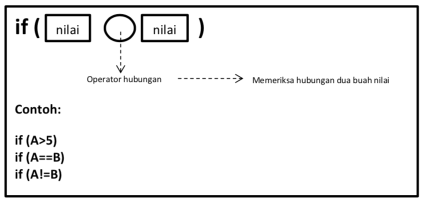
Contoh program:
import java.util.Scanner;
publicclassContoh{
publicstaticvoidmain(String[] args){
Scanner input = new Scanner(System.in);
int angka;
System.out.print("Masukkan angka: ");
angka = input.nextInt();
if (angka > 70) {
System.out.println("Selamat anda dinyatakan diterima");
}
}
}
Ketika program di atas dijalankan kemudian dimasukkan angka 80 maka akan keluar
tampilan Selamat anda dinyatakan diterima. Hal ini disebabkan karena
terdapat sebuah kondisi yang menyatakan bahwa jika nilai lebih dari 70 (angka > 70) maka akan tampil Selamat anda dinyatakan diterima, sedangkan jika dimasukkan angka 70 atau kurang dari 70 maka tidak akan terdapat tampilan apapun.
Sintaks Pemilihan if else
Bentuk umum:
if (kondisi) {
pernyataan1;
} else {
pernyataan2;
}
Bentuk flowchart:
Struktur ini minimal memiliki 2 pernyataan. Jika kondisi yang diperiksa bernilai
benar atau terpenuhi maka pernyataan pertama yang akan dilaksanakan dan jika
kondisi yang diperiksa bernilai salah maka pernyataan kedua yang akan
dilaksanakan.
Contoh program:
import java.util.Scanner;
publicclassContoh{
publicstaticvoidmain(String[] args){
Scanner input = new Scanner(System.in);
int angka;
System.out.print("Masukkan angka: ");
angka = input.nextInt();
if (angka > 70) {
System.out.println("Selamat anda dinyatakan diterima");
} else {
System.out.println("Silahkan coba tes lagi tahun depan");
}
}
}
Pada contoh program if else di atas ditambahkan kode program.
else {
System.out.println("Silahkan coba tes lagi tahun depan");
}
Sehingga ketika angka yang dimasukkan nilainya 70 atau kurang dari 70 maka akan
muncul tampilan Silahkan coba tes lagi tahun depan.
Pada bentuk if else if else di atas, pernyataan 1 akan dijalankan apabila
kondisi1 bernilai benar. Jika kondisi1 bernilai salah, maka akan dicek
kondisi2. Jika kondisi2 benar maka akan dijalankan pernyataan2, begitu
seterusnya. Dan apabila tidak ada satupun syarat yang terpenuhi, barulah
pernyataan-else akan dikerjakan.
Contoh program:
import java.util.Scanner;
publicclassContoh{
publicstaticvoidmain(String[] args){
Scanner input = new Scanner(System.in);
int bayar;
System.out.print("Masukkan total belanja anda: ");
bayar = input.nextInt();
if (bayar >= 2000000) {
System.out.println("Selamat anda mendapatkan hadiah kompor gas");
} elseif (bayar >= 1000000) {
System.out.println("Selamat anda mendapatkan hadiah teflon");
} elseif (bayar >= 500000) {
System.out.println("Selamat anda mendapatkan hadiah piring");
} else {
System.out.println("Maaf anda belum beruntung, tingkatkan belanja anda!");
}
}
}
Sintaks pemilihan switch case
Sintaks pemilihan ini digunakan untuk penyelesaian kondisi dengan kemungkinan
yang terjadi cukup banyak. Struktur ini akan melaksanakan salah satu dari
beberapa pernyataan case tergantung nilai kondisi yang ada di dalam switch.
Selanjutnya proses diteruskan hingga ditemukan pernyataan break. Jika tidak
ada nilai pada case yang sesuai dengan nilai kondisi, maka proses akan
diteruskan kepada pernyataan yang ada di bawah default. Bentuk switch case
pada umumnya digunakan untuk menggantikan pernyataan if else if else yang
berdasarkan nilai konstanta.
Bentuk umum:
switch (kondisi) {
case konstanta-1:
pernyataan-1;
break;
case konstanta-2:
pernyataan-2;
break;
...
...
case konstanta-x:
pernyataan-x;
break;
default:
pernyataan;
}
Contoh program:
import java.util.Scanner;
publicclassContoh{
publicstaticvoidmain(String[] args){
Scanner input = new Scanner(System.in);
int angka;
System.out.print("Masukkan kode kelas anda: ");
angka = input.nextInt();
switch(angka) {
case1:
System.out.println("Kelas 1");
break;
case2:
System.out.println("Kelas 2");
break;
case3:
System.out.println("Kelas 3");
break;
case4:
System.out.println("Kelas 4");
break;
default:
System.out.println("Kode yang anda masukkan salah");
}
}
}
Pada contoh program switch case di atas jika dimasukkan angka 1 maka
outputnya Kelas 1 dan seterusnya sampai angka 4. Jika inputan selain angka
1 s/d 4 maka outputnya adalah Kode yang anda masukkan salah.
Langkah Praktikum
Ikuti langkah-langkah praktikum berikut ini.
Praktikum 1
Perhatikan flowchart di bawah ini!
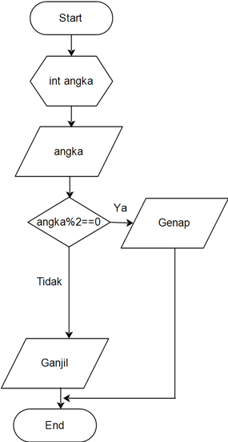
Flowchart diatas digunakan untuk menentukan bilangan ganjil/genap,
selanjutnya kita akan membuat programnya berdasarkan flowchart di atas!
Buka Netbeans yang sudah anda install
Buat project baru dengan nama “Pemilihan1” dengan cara File -> New Project
-> Java Application ->Next ->Pemilihan1 ->Finish
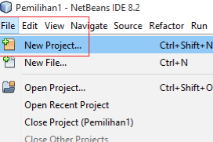
New Project
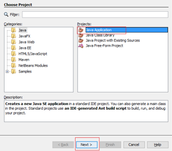
Java Application
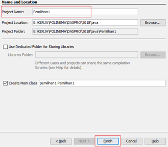
Project Name
Maka akan terdapat 1 buat project dengan nama Pemilihan 1 dan didalamnya
terdapat 1 file dengan nama Pemilihan1.java
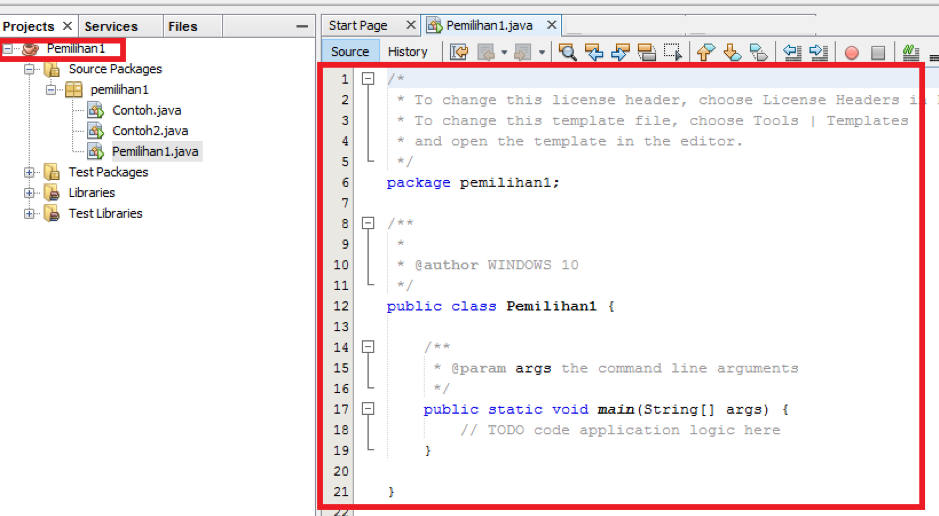
Tambahkan import library Scanner.
Deklarasikan Scanner:
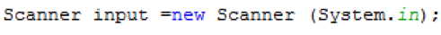
Buatlah variabel bertipe int dengan nama bil
Tambahkan kode berikut ini untuk menerima inputan dari keyboard:
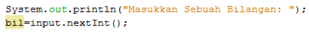
Buatlah struktur kondisi untuk mengecek apakah bilangan tersebut merupakan bilangan genap atau ganjil
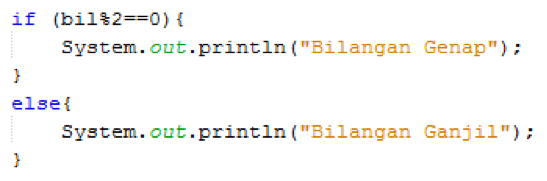
Jalankan program, maka outputnya adalah sebagai berikut:
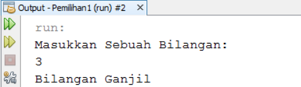
Pertanyaan!
Modifikasi program diatas dibagian struktur pemilihannya sehingga menjadi sebagai berikut:
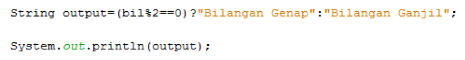
Jalankan dan amatilah hasilnya!
Jelaskan mengapa output program yang dimodifikasi sama dengan output program sebelum dimodifikasi!
Praktikum 2
Buat file baru beri nama “Percobaan2.java” di project “Pemilihan1”.
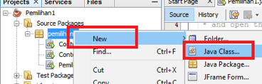
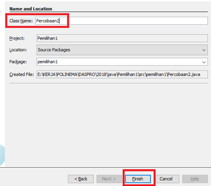
Tambahakan library Scanner.
Buatlah deklarasi Scanner.
Buat variabel nilai bertipe int.
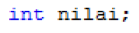
Tuliskan perintah untuk memasukkan inputan.
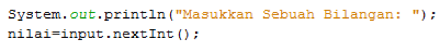
Tambahkan kode program kondisi dibawah ini
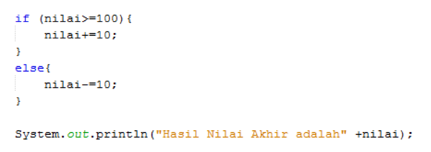
Jalankan program. Amati apa yang terjadi!
Pertanyaan
Jelaskan fungsi kode program berikut:
nilai += 10;
nilai += 10;
Modifikasilah program diatas dimana inputannya yang awalnya hanya satu
kemudian diganti 2 inputan (misal : nilai1 dan nilai2), lakukan perhitungan
rata-rata kedua nilai tersebut jika nilainya lebih dari sama dengan 100 maka
dikurangi 5, sedangkan jika nilai rata-rata tersebut kurang dari 100 maka
akan langsung dicetak!
Praktikum 3
Buat file baru beri nama “Percobaan3.java” di project “Pemilihan1”.
Tambahakan library Scanner.
Buatlah deklarasi Scanner.
Buat variabel umur bertipe int.
int umur;
Tuliskan perintah untuk memasukkan inputan.
System.out.println("Masukkan umur Anda: ");
umur = input.nextInt();
Jelaskan fungsi dari break dan default pada percobaan 4 diatas!
Jelaskan fungsi perintah kode program dibawah ini pada percobaan 4!
operator = sc.next().chartAt(0);
Tugas
Buatlah program untuk menginputkan dua buah bilangan bulat, kemudian
mencetak salah satu bilangan yang nilainya terbesar.
Perhatikan flowchart berikut ini:
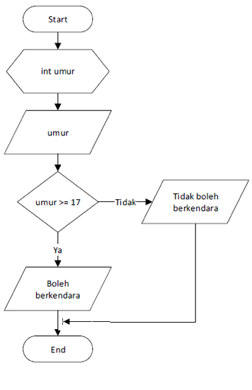
Buatlah program sesuai dengan flowchart diatas!
Anda ingin membangun sebuah Restoran. Restoran anda setidaknya mempunyai 3
menu yang dapat dipilih oleh pelanggan. Pelanggan dapat memilih menu dan
jumlah pesanan yang diinginkan. Untuk memudahkan pelayanan restoran, buatlah program
yang dapat menampilkan menu yang disediakan serta menghitung total harga yang
dibayarkan (ditambah dengan pajak restoran 10%) dan uang kembalian!
Ilustrasi menu restoran, dapat dilihat di bawah:
Menu Restoran Besok Gratis
1. Ayam Geprek - Rp. 100.000
2. Ayam Goreng - Rp. 80.000
3. Bebek Geprek - Rp. 150.000
Masukkan pilihan anda (1 - 3):
Sebuah toko menyediakan fasilitas member untuk memberikan diskon kepada
pelanggannya. Terdapat 3 kategori member yaitu: Silver, Gold, dan Platinum.
Setiap total belanja yang sesuai ketentuan katagori member akan mendapatkan
diskon spesial sesuai dengan ketentuan berikut: